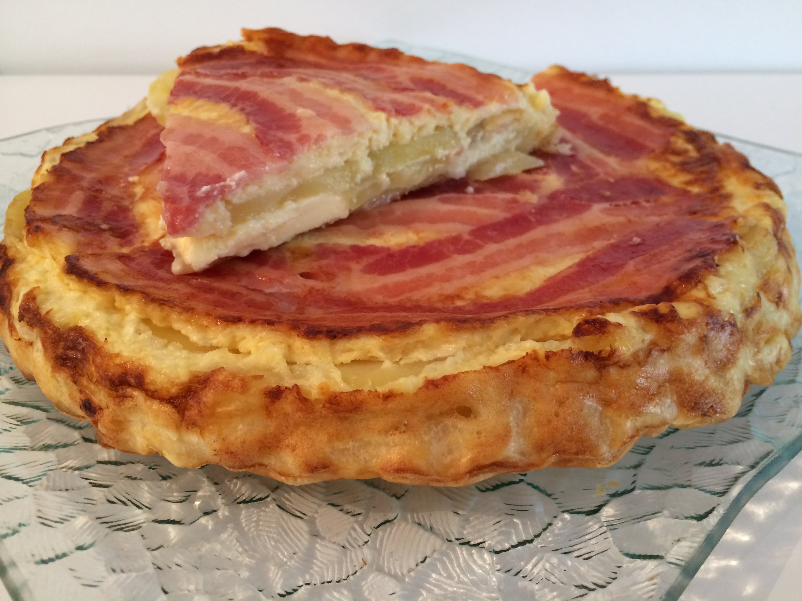

<ion-view view-title="Quiche tatin">

    <ion-content class="padding">


        <h1>Quiche tatin</h1>

        

        <p class="gras">Temps de préparation : 15 minutes</p>

        <p class="gras">Temps de cuisson : 30 minutes</p>

        <p class="gras">Ingrédients (pour 6 personnes) :</p>

        <ul>
            <li>- 7 ou 8 pommes de terre</li>
            <li>- 8 fines tranches de lard</li>
            <li>- 3 oeufs entiers</li>
            <li>- 20 cl de crème fraîche</li>
            <li>- 1 fromage de chèvre</li>
            <li>- Sel et poivre</li>
            <li>- 150 g de gruyère râpé</li>
            <li>- 1 pâte feuilletée</li>
        </ul><br>

        <p class="gras">Préparation de la recette :</p>

        <p>Faire cuire les pommes de terre à la vapeur.</p>

        <p>Tapisser le moule des tranches de lard.</p>

        <p>Mettre le râpé. Couper les pommes de terre en rondelles sur le râpé, puis le fromage de chèvre en tranches.</p>

        <p>Battre dans un bol la crème, les oeufs, le sel et poivre, verser sur la préparation.</p>

        <p>Mettre la pâte feuilletée dessus comme une tarte tatin et la piquer.</p>

        <p>Cuire à four thermostat 6/7 pendant 30 mn suivant le four. </p>


    </ion-content>

</ion-view>